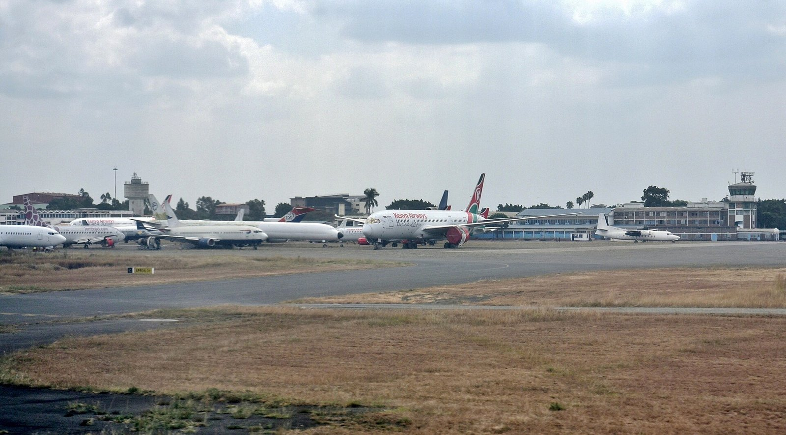

Airliners on the apron at Nairobi's Jomo Kenyatta International Airport, 2025 · Bahnfrend · via Wikimedia Commons · CC BY-SA 4.0
East Africa outgrew the world this year. The bill is arriving at the airport.
UN Tourism has halved its 2026 growth forecast, and Africa is the fastest-growing region in a world that has almost stopped growing. The figure East African operators will quote in their 2027 rate letters is real. The constraint it hides has moved from the room rate to the cost of the seat.
On 25 August, Kenya Airways told the market it had grown revenue by 9 per cent to KShs 81 billion in the six months to June. Dr George Kamal, the acting group managing director and chief executive, presented it as a result won by discipline. "We grew revenue by 9% to KShs 81 billion despite operating with 9% less capacity," he said.
The second clause is the one that matters. The airline earned more by flying less. It flew less because fuel had become the organising fact of its cost base: up 32 per cent year on year, running at roughly 32 per cent of operating expenses and 52 per cent of direct operating costs. Total operating costs rose 14 per cent. The cabin factor improved by four percentage points, which is what happens when you withdraw seats from a market that still wants them. The airline lost KShs 16.1 billion anyway, against KShs 12.2 billion a year earlier.
Three weeks later, on 17 September, UN Tourism published the September edition of its World Tourism Barometer, and East African trade bodies were handed the line they have been repeating ever since. Africa's international arrivals rose 4 per cent in the first half of 2026, the fastest growth of any world region, ahead of Europe on 3 per cent, the Americas on 2 per cent and Asia and the Pacific on 1 per cent. The figure is accurate. It is also the most misleading number an East African operator will be given this year, because of what it is measured against.
Globally, arrivals in the first half came to 690 million, a rise of 0.4 per cent. That is three million more travellers than the same period in 2025, in an industry that moves nearly 700 million people in six months. UN Tourism cut its full-year forecast for 2026 to between 1 and 2 per cent growth, down from the 3 to 4 per cent it had projected in January. The Middle East, which had been the sector's growth engine, fell 22 per cent. South Asia fell 5 per cent, South East Asia 1 per cent. "Tourism has not stopped growing, but that growth is fragile," said Shaikha Al Nowais, the organisation's secretary-general, who took office in January as the first woman to hold the post.
Read the two documents together and Africa's 4 per cent stops looking like momentum and starts looking like arithmetic. Part of it is a low base. Part of it is diversion: when Gulf airspace closes and Middle Eastern carriers contract, some of the traffic that would have connected through Doha or Dubai goes somewhere else, and some of the holidays that would have been taken in the region are taken elsewhere. Very little of it is the world deciding it wants more of East Africa than it did last year.
The Kenyan monthly data, drawn from the National Bureau of Statistics, shows the texture underneath. Arrivals rose 12 per cent in January, 8.4 per cent in February and 14.2 per cent in March, then 2.9 per cent in April, which is the month global arrivals themselves went into reverse. The more durable pattern in that series has nothing to do with long haul at all. Arrivals from East and Central African cities, Addis Ababa, Kigali, Entebbe and Dar es Salaam among them, ran at between 72,000 and 75,000 a month and overtook Europe in several of them. The region is increasingly selling to itself.
None of which is the interesting part. The interesting part is where the price resistance has gone.
Kirsty Gordon, chief executive of Anywhere in Africa Safaris, put it in one sentence to Southern and East African Tourism Update on 9 September. "It has been more about price sensitivity on international flight costs into Africa due to the fuel increases, which clients book themselves, but not price sensitivity for lodges or hotels."
That is the whole argument, delivered by someone selling the product. The guest is not haggling over the nightly rate. The guest is looking at the airfare and deciding whether the trip happens. And the airfare is the one line in the trip budget that no East African operator controls, sets, discounts or can even reliably forecast.
The reason is visible in the aviation numbers rather than the tourism ones. IATA's June outlook, published under the title Energy in Crisis, assumed Brent at USD 95 a barrel for 2026 and a jet fuel crack spread of USD 57, giving an average jet fuel price of USD 152 a barrel, roughly 70 per cent above the previous year. Industry fuel spend was put at USD 350 billion, a rise of 39.3 per cent, and 31.4 per cent of operating costs. Global aircraft departures were forecast to fall 0.6 per cent. Passenger traffic was forecast to grow 2.1 per cent. The industry is being asked to carry more people on fewer flights, and it is paying a great deal more for the privilege.
Against that, IATA put African passenger traffic growth at 10 per cent for 2026, the strongest of any region. Set the two facts beside each other and the squeeze is obvious. African demand for seats is growing at five times the global rate while the carriers that serve it withdraw capacity to protect their balance sheets. Kenya Airways cut 9 per cent. RwandAir suspended its Dubai and Doha services after the Iran conflict disrupted Gulf airspace, taking cargo runs to Dubai, Sharjah and Abu Dhabi with them. Kamal, speaking in August, was blunt about what he was short of. "We have demand, every route we deploy ... it's full, so we need the aircraft as soon as possible." He also said the airline had been "heavily impacted by the war, with fuel prices rising by 72 per cent in the current half year."
A full aeroplane into Jomo Kenyatta is therefore not evidence of a healthy market. It is evidence of a rationed one. And rationed seats do what rationed anything does: they price upward, they price unpredictably, and they price without reference to whether a lodge in Laikipia has held its rate.
The effect on the guest is already documented. Valerie de Bruyn, owner and travel director of Africa Memories Travel, described the behaviour to the same publication. "We are seeing some trading down rather than trading out of safari. Guests who may previously have chosen a higher-end lodge are often happy to consider a more affordable property, provided the overall safari experience remains strong." The question she now fields from clients is, in her account, simply: "Can you offer us a similar safari experience at a better rate?"
David Ryan, founder and chief executive of Rhino Africa, added the structural point that makes this bite hardest in East Africa. "Everything north of the Limpopo is dollar-based. Even many South African lodges set their pricing in dollars." An operator whose rate card is in dollars cannot absorb a fare shock through currency. The guest sees one dollar total and allocates it between seat and bed, and the seat is being bid up first.
Ryan's own figures show where that leaves the repeat guest, the most valuable segment most camps have. A trip that cost a returning client roughly USD 20,000 two years ago now costs between USD 25,000 and USD 30,000. Rhino Africa runs 60 to 65 per cent of its business on repeat and referral, and its peak booking window for this high season ran from January to March, with lead times on high-end bookings of 186 to 190 days. Those are long, deliberate decisions, taken months before departure, on a total number. By the time an operator learns the guest balked, the season is gone.
The arithmetic that matters for 2027. A 6 per cent rate rise on a seven-night safari at USD 900 a night adds USD 378 to the trip. A 25 per cent move in a long-haul return fare from Europe, on a base of USD 1,100, adds USD 275 per traveller, or USD 550 for a couple. The operator controls the smaller number and is blamed for the larger one.
Which is why the 2027 rate letter now being drafted across the region is answering the wrong question. The question is not how much of an increase the market will bear on a bed night. On current evidence it will bear a reasonable one: Kenya's forward bookings for August to November, in the Central Bank of Kenya's own survey of hoteliers, stood at 56.25 per cent against 49.5 per cent in the comparable period a year earlier. UN Tourism's confidence index for September to December came in at 113 on a scale where 100 is neutral, up from 105 for May to August. Demand exists. Sentiment has improved.
The question is what the total trip costs, and whether the property is competing on the part of that total it can actually move. Three things follow. Quote the trip, not the night, because that is the unit the guest is deciding on, and a property that only ever publishes a per-night rate has handed the framing to whoever assembles the package. Build a genuinely shorter product, because a guest trading down on nights is cheaper to keep than a guest trading out of the destination, and a strong three-night offering protects the rate in a way a discount does not. And watch the fare into your nearest gateway with the attention normally reserved for the comp set, because in 2027 the airline's fuel hedge will do more to your occupancy than your competitor's rate card will.
Two cautions are worth stating plainly. The first is that a share gain built on Middle Eastern weakness is a loan, not an endowment. The region's arrivals fell 22 per cent this year; when Gulf airspace normalises and its carriers restore capacity, some of the traffic East Africa is currently banking goes home, and it will go home into a full-year global growth rate that UN Tourism has already halved. The second is that Africa's 10 per cent traffic growth and East Africa's shrinking seat supply cannot both continue indefinitely. One of them resolves. If it resolves through fares, the region keeps its arrivals and loses its yield mix, and the guest who used to book the USD 900 room books the USD 500 one. If it resolves through capacity, through aircraft actually arriving, the constraint eases and the rate conversation returns to normal.
Nobody in East African hospitality gets a vote on which. That is the uncomfortable part of a very good headline number.
📣 Telegram 💬 WhatsApp 💼 LinkedIn 📚 All guides